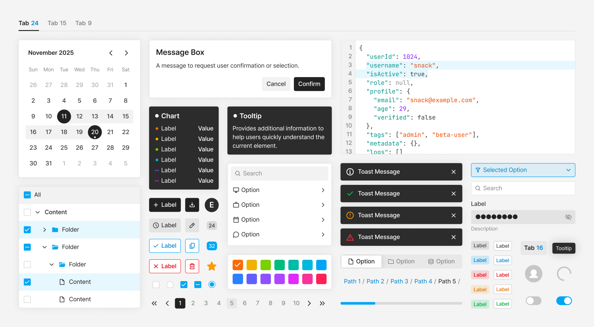

Exem UI — 디자인 라이브러리로 사내 제품 통합하기
디자인 · 개발 통합 라이브러리 Exem UI · 2025.05 - 2026.02
Exem UI는 서로 다른 모습으로 존재하던 사내 제품들의 디자인을 하나의 공통 시스템으로 정리하고, 디자인과 개발이 같은 기준으로 함께 관리할
수 있도록 만든 통합 라이브러리입니다. 단순히 디자인 컴포넌트를 정리하는 것을 넘어 토큰 체계, 개발 라이브러리, 문서 사이트, 운영
정책까지, 지속 가능한 시스템을 주도적으로 구축하고 운영했습니다.
